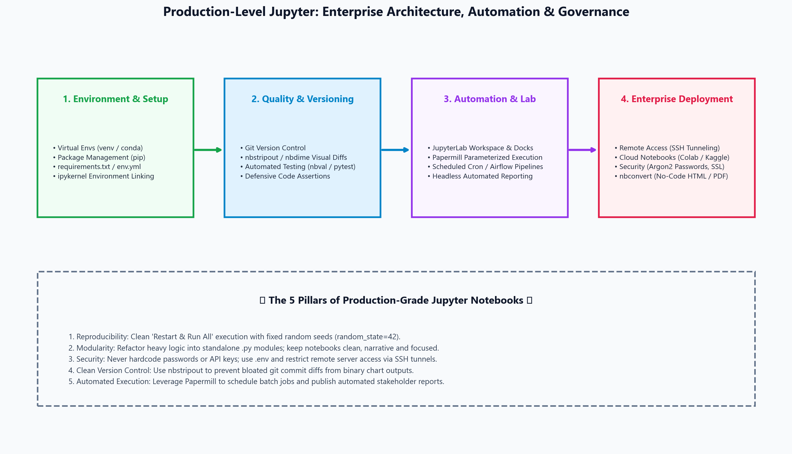

Jupyter Notebook - Part 8: Professional and Production-Level Jupyter
Jupyter Notebook को एक व्यक्तिगत स्क्रैचपैड से बदलकर एंटरप्राइज प्रोडक्शन-ग्रेड सिस्टम बनाने का संपूर्ण गाइड: वर्चुअल एनवायरनमेंट्स, पैकेज आइसोलेशन, गिट वर्ज़न कंट्रोल, टेस्ट ऑटोमेशन, Papermill शेड्यूलिंग, JupyterLab, रिमोट SSH टनलिंग, क्लाउड प्लेटफॉर्म्स, हार्डन सिक्योरिटी एवं क्लीन कोड बेस्ट प्रैक्टिसेस।

Chapter 73: Virtual Environments (वर्चुअल एनवायरनमेंट्स: `venv` एवं `conda`)
अध्याय 73जब आप कई डेटा साइंस प्रोजेक्ट्स पर काम करते हैं, तो अक्सर वर्ज़न का टकराव (Version Conflict) होता है—उदा. एक पुराना प्रोजेक्ट Pandas 1.5 चाहता है और नया प्रोजेक्ट Pandas 2.2। Virtual Environment प्रत्येक प्रोजेक्ट के लिए पूरी तरह अलग, स्वच्छ पायथन इंस्टॉलेशन बनाता है ताकि सिस्टम का ग्लोबल एनवायरनमेंट कभी दूषित न हो।
73.1 Native `venv` vs `conda`
| फ़ीचर | Python Native `venv` | Anaconda `conda` |
|---|---|---|
| पैकेज प्रकार | केवल शुद्ध पायथन पैकेजेस (PyPI से pip द्वारा)। | पायथन + C/C++ बाइनरीज (MKL, CUDA, BLAS आदि)। |
| पायथन वर्ज़न नियंत्रण | सिस्टम में पहले से मौजूद पायथन वर्ज़न का उपयोग करता है। | बिना सिस्टम छुए किसी भी पायथन वर्ज़न (3.8, 3.10, 3.12) का एनवायरनमेंट बना सकता है। |
| आकार व गति | अत्यंत हल्का (~15-20 MB)। | भारी लेकिन डेटा साइंस और GPU ड्राइवर्स के लिए अधिक अनुकूलित। |
73.2 Commands Cheat Sheet
# 1. venv बनाना व चालू करना
python -m venv my_nlp_env
# Windows:
my_nlp_env\Scripts\activate
# Mac / Linux:
source my_nlp_env/bin/activate
# 2. Conda एनवायरनमेंट बनाना व चालू करना
conda create -n my_ml_env python=3.10
conda activate my_ml_env73.3 Connecting Environment to Jupyter via `ipykernel`
नया एनवायरनमेंट बनाने के बाद उसे जुपिटर नोटबुक के कर्नल ड्रॉपडाउन में जोड़ने का अनिवार्य चरण:
# सक्रिय एनवायरनमेंट में ipykernel इंस्टॉल करें
pip install ipykernel
# एनवायरनमेंट को जुपिटर में कर्नल के रूप में पंजीकृत करें
python -m ipykernel install --user --name=my_ml_env --display-name="Python (My ML Env)"Chapter 74: Package Management (`pip` एवं `requirements.txt`)
अध्याय 7474.1 Reproducible `requirements.txt`
किसी भी पेशेवर प्रोजेक्ट में सहकर्मियों या क्लाउड सर्वर पर कोड रीप्रोड्यूस करने के लिए requirements.txt सबसे महत्वपूर्ण फ़ाइल होती है:
# वर्तमान एनवायरनमेंट के सभी पैकेजेस का स्नैपशॉट बनाना
pip freeze > requirements.txt
# नए कंप्यूटर पर सभी आवश्यक पैकेजेस एक क्लिक में इंस्टॉल करना
pip install -r requirements.txtप्रो-टिप: Loose vs Pinned Versions
उत्पादन (Production) में हमेशा सटीक वर्ज़न पिन करें (उदा. pandas==2.2.1), ताकि भविष्य में किसी पैकेज के नए अपडेट से आपका प्रोडक्शन कोड न टूटे!
Chapter 75: Git Integration & Version Control (गिट एवं गिटहब)
अध्याय 7575.1 The Git Notebook Problem
Jupyter Notebook फ़ाइलें आंतरिक रूप से विशाल JSON होती हैं जिनमें कोड के साथ-साथ सेल निष्पादन संख्या (Execution counts), मेटाडेटा और चार्ट्स की विशाल Base64 इमेजेस सेव रहती हैं। इसके कारण गिट पर एक लाइन बदलने पर भी हजारों लाइनों का अपठनीय Git Diff बन जाता है और टीम में मर्ज कॉन्फ्लिक्ट्स (Merge Conflicts) सुलझाना अत्यंत कठिन हो जाता है।
75.2 Professional Solutions: `nbstripout` and `nbdime`
nbstripout: यह एक स्वचालित Git फ़िल्टर है। जब आपgit commitचलाते हैं, तो यह कमिट करने से ठीक पहले नोटबुक के सभी भारी आउटपुट्स और चार्ट्स को स्वतः साफ़ कर देता है, जिससे केवल स्वच्छ कोड और मार्कडाउन गिट में जाता है:pip install nbstripout nbstripout --install # वर्तमान गिट रिपॉजिटरी में ऑटो-फ़िल्टर सक्रिय करेंnbdime(Notebook Diff & Merge): यह टूल टर्मिनल या ब्राउज़र में दो नोटबुक्स के बीच विज़ुअल, मानव-पठनीय रंगीन तुलना और 3-वे मर्ज इंटरफ़ेस प्रदान करता है:pip install nbdime nbdime config-git --enable --global nbdiff-web notebook_v1.ipynb notebook_v2.ipynb
Chapter 76: Notebook Testing (नोटबुक परीक्षण: Assertions व Unit Testing)
अध्याय 7676.1 Defensive Programming with Assertions
डेटा पाइपलाइन में आगे बढ़ने से पहले डेटा की वैधता जांचने के लिए assert स्टेटमेंट्स का उपयोग करें:
76.2 Automated Notebook CI/CD Testing with `nbval`
GitHub Actions या Jenkins CI/CD पाइपलाइन में यह सुनिश्चित करने के लिए कि कोई भी कमिट नोटबुक को क्रैश न करे:
pip install pytest nbval
pytest --nbval my_production_notebook.ipynbChapter 77: Notebook Automation & Scheduling (`Papermill`)
अध्याय 77Papermill Netflix द्वारा विकसित एक क्रांतिकारी टूल है जो Jupyter Notebooks को पैरामीटरयुक्त (Parameterized) बनाकर बिना GUI खोले सीधे कमांड-लाइन, बैकग्राउंड जॉब या शेड्यूलर से निष्पादित करने की सुविधा देता है।
77.1 How Papermill Works
- अपनी नोटबुक के पहले सेल में डिफॉल्ट वैरिएबल्स (जैसे
alpha = 0.01,date = "2026-11-24") लिखें। - उस सेल के सेल-मेटाडेटा में `parameters` टैग जोड़ें।
- कमांड लाइन या पायथन से अलग-अलग इनपुट पैरामीटर्स देकर नोटबुक को बैच में चलाएं:
# CLI द्वारा नोटबुक निष्पादित करके आउटपुट नोटबुक सहेजना
papermill daily_sales_template.ipynb output_2026_11_24.ipynb -p date "2026-11-24" -p region "APAC"77.2 Scheduled Cron Execution
Linux सर्वर पर हर रात 2 बजे स्वचालित रूप से रिपोर्ट जनरेट करने के लिए crontab -e में Papermill जोड़ें:
0 2 * * * papermill /home/ubuntu/model_training.ipynb /home/ubuntu/reports/out_$(date +\%F).ipynbChapter 78: JupyterLab (आधुनिक वर्कस्पेस एवं विशेषताएं)
अध्याय 78JupyterLab प्रोजेक्ट जुपिटर का अगली पीढ़ी का फ्लैगशिप वेब-इंटरफ़ेस है। यह क्लासिक नोटबुक की सभी क्षमताओं के साथ-साथ एक पूर्ण IDE जैसा लचीला लेआउट प्रदान करता है:
- मल्टी-डॉक्यूमेंट डॉक्स (Split Panes): नोटबुक, टर्मिनल, CSV टेबल और मार्कडाउन प्रीव्यू को स्क्रीन पर अगल-बगल (Side-by-Side) खींचकर व्यवस्थित करना।
- कमांड पैलेट: Ctrl + Shift + C द्वारा किसी भी कमांड को तुरंत खोजना।
- कॉन्टेक्स्टुअल हेल्प: Ctrl + I दबाने पर एक साइडबार खुलता है जो कर्सर के नीचे वाले फ़ंक्शन का लाइव डॉक्यूमेंटेशन अपने आप दिखाता रहता है।
- विज़ुअल डीबगर: ऊपर दाईं ओर ब्रेकपॉइंट टॉगल (🐞) द्वारा कोड को लाइन-दर-लाइन रोकना और कॉल स्टैक देखना।
Chapter 79: Jupyter Server Configuration (सर्वर प्रबंधन)
अध्याय 79Jupyter Server बैकएंड में Tornado Web Server पर चलता है। इसकी मुख्य सेटिंग्स jupyter_server_config.py में कॉन्फ़िगर की जाती हैं:
| निर्देश (Directive) | कॉन्फ़िगरेशन कोड | विवरण |
|---|---|---|
| नेटवर्क इंटरफ़ेस | c.ServerApp.ip = '0.0.0.0' |
लोकलहोस्ट के बाहर नेटवर्क के सभी IP पतों पर सुनना। |
| रूट फ़ोल्डर | c.ServerApp.root_dir = '/data/projects' |
सर्वर का डिफ़ॉल्ट वर्कस्पेस पाथ सेट करना। |
| अधिकतम फ़ाइल अपलोड | c.ServerApp.max_buffer_size = 1073741824 |
अपलोड सीमा को बढ़ाकर 1 GB करना। |
| टर्मिनल अक्षम करना | c.ServerApp.terminals_enabled = False |
सार्वजनिक/साझा सर्वर पर शेल एक्सेस ब्लॉक करके सुरक्षा बढ़ाना। |
Chapter 80: Remote Jupyter (SSH टनलिंग एवं VPS रिमोट एक्सेस)
अध्याय 80जब आपको भारी मशीन लर्निंग मॉडल्स को क्लाउड GPU सर्वर (AWS EC2, Google Cloud VM) पर ट्रेन करना हो और अपने लैपटॉप के ब्राउज़र से कंट्रोल करना हो, तो SSH Port Forwarding (टनलिंग) सबसे सुरक्षित तरीका है:
चरण 1: रिमोट क्लाउड सर्वर पर जुपिटर बिना ब्राउज़र के चलाएं:
jupyter lab --no-browser --port=8888चरण 2: अपने स्थानीय लैपटॉप के टर्मिनल में SSH टनल खोलें:
# आपके लैपटॉप के 8888 पोर्ट को रिमोट सर्वर के 8888 पोर्ट से एन्क्रिप्टेड टनल द्वारा जोड़ना
ssh -N -f -L 8888:localhost:8888 ubuntu@your-server-ipचरण 3: लैपटॉप ब्राउज़र में http://localhost:8888 खोलें। सारा कोड शक्तिशाली रिमोट सर्वर पर चलेगा जबकि इंटरफ़ेस आपके लोकल लैपटॉप पर दिखेगा!
Chapter 81: Cloud Notebooks (Google Colab, Kaggle एवं क्लाउड प्लेटफॉर्म्स)
अध्याय 81| प्लेटफॉर्म | मुफ्त हार्डवेयर त्वरक (Hardware) | डेटा स्टोरेज एवं सीमाएं | सर्वश्रेष्ठ उपयोग |
|---|---|---|---|
| Google Colab | 무료 Nvidia T4 / V100 GPUs, Google TPUs | Google Drive माउंटिंग (12 घंटे का सेशन टाइमआउट) | डीप लर्निंग ट्यूटोरियल्स, क्विक प्रोटोटाइपिंग, सहयोगात्मक शेयरिंग |
| Kaggle Kernels | Nvidia P100 / T4 x2 GPUs (30 घंटे/सप्ताह) | प्रतियोगिता डेटासेट्स सीधे लिंक (20 GB डिस्क) | डेटा साइंस प्रतियोगिताएं, सार्वजनिक डेटासेट एक्सप्लोरेशन |
| Local Jupyter | आपके कंप्यूटर का लोकल CPU / GPU | असीमित स्थानीय हार्ड डिस्क, पूर्ण डेटा गोपनीयता | संवेदनशील कॉर्पोरेट डेटा, लंबी ट्रेनिंग, ऑफ़लाइन विकास |
81.1 Essential Google Colab Commands
# Google Drive कनेक्ट करना
from google.colab import drive
drive.mount('/content/drive')
# GPU का नाम जांचना
!nvidia-smiChapter 82: Security (टोकन, पासवर्ड, एन्क्रिप्शन एवं एक्सेस कंट्रोल)
अध्याय 82सुरक्षा चेतावनी:
बिना पासवर्ड या टोकन के 0.0.0.0 पर चल रही जुपिटर नोटबुक इंटरनेट पर मौजूद किसी भी व्यक्ति को आपके कंप्यूटर पर मनमाना कोड चलाने (Arbitrary Remote Code Execution) और फ़ाइलें मिटाने की पूरी छूट दे देती है!
82.1 Setting Strong Persistent Password
कमजोर यूआरएल टोकन के बजाय सर्वर पर Argon2 क्रिप्टोग्राफिक हैश वाला पासवर्ड सेट करें:
jupyter server password82.2 SSL/TLS (HTTPS) Encryption
ब्राउज़र और जुपिटर सर्वर के बीच पासवर्ड और कोड को नेटवर्क पर स्निफ होने से बचाने के लिए SSL एन्क्रिप्शन लागू करें:
# सेल्फ-साइन्ड सर्टिफिकेट बनाना
openssl req -x509 -nodes -days 365 -newkey rsa:2048 -keyout mykey.key -out mycert.pem
# jupyter_server_config.py में जोड़ें:
c.ServerApp.certfile = '/path/to/mycert.pem'
c.ServerApp.keyfile = '/path/to/mykey.key'Chapter 83: Exporting (HTML, PDF, Python Scripts via `nbconvert`)
अध्याय 83`nbconvert` जुपिटर नोटबुक को विभिन्न उत्पादन प्रारूपों में बदलने का आधिकारिक कमांड-लाइन इंजन है:
| लक्षित प्रारूप | CLI कमांड | उपयोग का परिदृश्य |
|---|---|---|
| Clean Python Script (.py) | jupyter nbconvert --to script analysis.ipynb |
नोटबुक से शुद्ध पायथन स्क्रिप्ट बनाकर प्रोडक्शन पाइपलाइन में शेड्यूल करना। |
| No-Code HTML Report | jupyter nbconvert --to html analysis.ipynb --no-input |
सभी कोड सेल्स छिपाकर केवल सुंदर चार्ट्स और मार्कडाउन सारांश वाला वेबपेज बनाना (क्लाइंट्स और प्रबंधकों के लिए)। |
| PDF Document (.pdf) | jupyter nbconvert --to webpdf analysis.ipynb |
हेडलैस क्रोमियम द्वारा प्रिंट-क्वालिटी पीडीएफ जनरेट करना। |
| Interactive Slides (.html) | jupyter nbconvert --to slides analysis.ipynb --post serve |
नोटबुक को प्रेजेंटेशन स्लाइड्स (Reveal.js) में बदलकर तुरंत लाइव प्रेजेंट करना। |
Chapter 84: Production Best Practices (स्वच्छ कोड व पुन: प्रयोज्य नोटबुक्स)
अध्याय 8484.1 The Top 10 Commandments of Professional Notebooks
- Restart & Run All Check: किसी भी नोटबुक को साझा या कमिट करने से पहले हमेशा
Kernel -> Restart & Run Allचलाकर यह सत्यापित करें कि कोड बिना किसी आउट-ऑफ-ऑर्डर बग के ऊपर से नीचे तक सही चल रहा है। - Single Responsibility Principle: एक ही 200-सेल वाली विशाल अनियंत्रित नोटबुक न बनाएं। कार्यों को क्रमबद्ध छोटी नोटबुक्स में विभाजित करें:
01_data_ingestion.ipynb 02_data_cleaning_and_validation.ipynb 03_exploratory_data_analysis.ipynb 04_model_training_and_tuning.ipynb 05_model_evaluation_and_export.ipynb - Refactor Heavy Code to `.py` Modules: जटिल फ़ंक्शंस, डेटाबेस हेल्पर्स और क्लासेस को नोटबुक में न रखें; उन्हें अलग
src/utils.pyमें रखकर नोटबुक में केवलfrom src.utils import clean_dataइम्पोर्ट करें। - Never Hardcode Secrets: API Keys और डेटाबेस पासवर्ड्स को कभी भी नोटबुक सेल में न लिखें।
python-dotenvऔर.envफ़ाइल का उपयोग करें:from dotenv import load_dotenv import os load_dotenv() API_KEY = os.getenv("GEMINI_API_KEY") - Clear Outputs Before Commit: गिट रिपॉजिटरी को हल्का रखने के लिए
nbstripoutका उपयोग करें। - Fix Random Seeds: परिणामों की पुनरावृत्ति (Reproducibility) सुनिश्चित करने के लिए हमेशा
np.random.seed(42)औरrandom_state=42सेट करें। - Document the "Why", Not Just "What": कोड बताता है कि क्या हो रहा है, मार्कडाउन में लिखें कि आपने यह निर्णय क्यों लिया (उदा. "आउटलायर्स को हटाने के बजाय कैप क्यों किया गया?")।
- Defensive Assertions: डेटा इनपुट और आउटपुट के हर चरण पर
assertलगाकर डेटा विसंगतियों को तुरंत पकड़ें। - Maintain Environment File: हमेशा प्रोजेक्ट के साथ एक
requirements.txtयाenvironment.ymlसंलग्न करें। - Set Visual Hierarchy: हेडिंग्स (#, ##, ###) का व्यवस्थित क्रम रखें और पहले सेल में हमेशा क्लिक करने योग्य Table of Contents (TOC) दें।